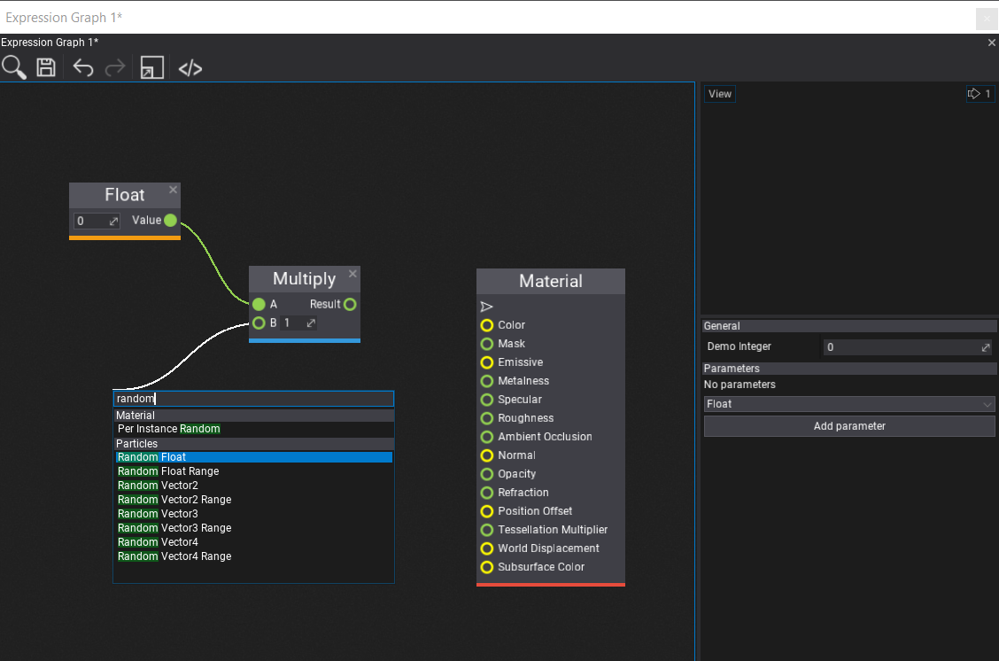

Custom Visject Surfaces
The Flax Engine has a visual scripting language called Visject. It's used by Materials, Particles, and Animations. It offers a wide range of features to be used by content creation tools.
You can also use it for your own purposes which can range from a simple graphing plugin to a full-blown scripting system.
These tutorials will go over the process of creating your own Visject surface for an expression graph. Something very simple that takes a few numbers, performs a few calculations and outputs a number. It is recommended to first check out the custom plugin tutorials.

Asset
The first step is creating our own asset type. This asset type needs a byte[] to save the Visject surface.
It also needs a version of the graph that you can execute in a built game. This part will be covered in a later tutorial.
public class ExpressionGraph
{
/// <summary>
/// Serialized Visject surface
/// </summary>
public byte[] VisjectSurface { get; set; }
// TODO: Stuff that you can execute in a built game
}
This asset type will be a json asset.
Asset Proxy
To create and open assets using the Flax Editor, an asset proxy is required. Since it's an editor file, it needs to be in the editor assembly. To do so, create a new folder called Editor. In this folder, create a new asset proxy.
public class ExpressionGraphProxy : JsonAssetProxy
{
/// <inheritdoc />
public override string Name => "Expression Graph";
/// <inheritdoc />
// This will be implemented in the next step...
//public override EditorWindow Open(FlaxEditor.Editor editor, ContentItem item)
//{
// return new ExpressionGraphWindow(editor, (JsonAssetItem)item);
//}
/// <inheritdoc />
public override Color AccentColor => Color.FromRGB(0x0F0371);
/// <inheritdoc />
public override string TypeName { get; } = typeof(ExpressionGraph).FullName;
/// <inheritdoc />
public override bool CanCreate(ContentFolder targetLocation)
{
return targetLocation.CanHaveAssets;
}
/// <inheritdoc />
public override void Create(string outputPath, object arg)
{
FlaxEditor.Editor.SaveJsonAsset(outputPath, new ExpressionGraph());
}
}
Register the proxy
Then, we have to use an editor plugin to register the proxy.
Note
Make sure to add it before the GenericJsonAssetProxy, which is the last proxy in the list and is used as a fallback proxy.
public class ExpressionGraphPlugin : EditorPlugin
{
private ExpressionGraphProxy _expressionGraphProxy;
/// <inheritdoc />
public override void InitializeEditor()
{
base.InitializeEditor();
_expressionGraphProxy = new ExpressionGraphProxy();
// Register the proxy
Editor.ContentDatabase.Proxy.Insert(0, _expressionGraphProxy);
}
/// <inheritdoc />
public override void Deinitialize()
{
// Cleanup on plugin deinit
Editor.ContentDatabase.Proxy.Remove(_expressionGraphProxy);
base.Deinitialize();
}
}
Once this is done, you should be able to create a new expression graph asset in your Content folder.
Visject Window
Opening the expression graph is currently rather disappointing. So, in this step, we'll create our own window with a Visject surface for it. Such a window has an asset, a temporary copy of the asset, a number of parameters, a surface and a live-preview.
Basic Implementation
To do so, we create a file in the Editor folder that inherits from VisjectSurfaceWindow. We'll also need a preview and a surface in the Editor folder.
public class ExpressionGraphPreview : AssetPreview
{
// Preview will be expanded later
public ExpressionGraphPreview(bool useWidgets) : base(useWidgets)
{
}
public ExpressionGraph ExpressionGraph { get; set; }
}
public class ExpressionGraphSurface : VisjectSurface
{
public const int MainNodeGroupId = 1;
public const int MainNodeTypeId = 1;
// Surface will be expanded later
public ExpressionGraphSurface(IVisjectSurfaceOwner owner, Action onSave, FlaxEditor.Undo undo = null, SurfaceStyle style = null, List<GroupArchetype> groups = null)
: base(owner, onSave, undo, style, groups)
{
}
}
public class ExpressionGraphWindow : VisjectSurfaceWindow<JsonAsset, ExpressionGraphSurface, ExpressionGraphPreview>
{
/// <summary>
/// The allowed parameter types.
/// </summary>
private readonly ScriptType[] _newParameterTypes =
{
new ScriptType(typeof(float)),
new ScriptType(typeof(Vector2)),
new ScriptType(typeof(Vector3)),
new ScriptType(typeof(Vector4)),
};
/// <summary>
/// The properties proxy object.
/// </summary>
private sealed class PropertiesProxy
{
[EditorOrder(1000), EditorDisplay("Parameters"), CustomEditor(typeof(ParametersEditor)), NoSerialize]
// ReSharper disable once UnusedAutoPropertyAccessor.Local
public ExpressionGraphWindow Window { get; set; }
[EditorOrder(20), EditorDisplay("General"), Tooltip("It's for demo purposes")]
public int DemoInteger { get; set; }
[HideInEditor, Serialize]
public List<SurfaceParameter> Parameters
{
get => Window.Surface.Parameters;
set => throw new Exception("No setter.");
}
/// <summary>
/// Gathers parameters from the specified window.
/// </summary>
/// <param name="window">The window.</param>
public void OnLoad(ExpressionGraphWindow window)
{
// Link
Window = window;
}
/// <summary>
/// Clears temporary data.
/// </summary>
public void OnClean()
{
// Unlink
Window = null;
}
}
private readonly PropertiesProxy _properties;
private ExpressionGraph _assetInstance;
/// <inheritdoc />
public ExpressionGraphWindow(FlaxEditor.Editor editor, AssetItem item)
: base(editor, item)
{
// Asset preview
_preview = new ExpressionGraphPreview(true)
{
Parent = _split2.Panel1
};
// Asset properties proxy
_properties = new PropertiesProxy();
_propertiesEditor.Select(_properties);
// Surface
_surface = new ExpressionGraphSurface(this, Save, _undo)
{
Parent = _split1.Panel1,
Enabled = false
};
// Toolstrip
_toolstrip.AddSeparator();
_toolstrip.AddButton(editor.Icons.BracketsSlash32, () => ShowJson(_asset)).LinkTooltip("Show asset contents");
}
/// <summary>
/// Shows the JSON contents window.
/// </summary>
/// <param name="asset">The JSON asset.</param>
public static void ShowJson(JsonAsset asset)
{
FlaxEditor.Utilities.Utils.ShowSourceCodeWindow(asset.Data, "Asset JSON");
}
/// <inheritdoc />
public override IEnumerable<ScriptType> NewParameterTypes => _newParameterTypes;
/// <inheritdoc />
protected override void UnlinkItem()
{
// Cleanup
_properties.OnClean();
_preview.ExpressionGraph = null;
base.UnlinkItem();
}
/// <inheritdoc />
protected override void OnAssetLinked()
{
// Setup
_assetInstance = _asset.CreateInstance<ExpressionGraph>();
_preview.ExpressionGraph = _assetInstance;
base.OnAssetLinked();
}
/// <inheritdoc />
public override string SurfaceName => "Expression Graph";
/// <inheritdoc />
public override byte[] SurfaceData
{
get => ExpressionGraphSurface.LoadSurface(_asset, _assetInstance, true);
set
{
// Save data to the temporary asset
if (ExpressionGraphSurface.SaveSurface(_asset, _assetInstance, value))
{
// Error
_surface.MarkAsEdited();
Debug.LogError("Failed to save surface data");
}
// Optionally reset the preview
}
}
/// <inheritdoc />
protected override bool LoadSurface()
{
// Init asset properties and parameters proxy
_properties.OnLoad(this);
// Load surface graph
if (_surface.Load(data))
{
// Error
Debug.LogError("Failed to load expression graph surface.");
return true;
}
return false;
}
/// <inheritdoc />
protected override bool SaveSurface()
{
// TODO: Graph compilation
_surface.Save();
return false;
}
/// <inheritdoc />
public override void SetParameter(int index, object value)
{
// TODO: Update the asset value to have nice live preview
//_assetInstance.Parameters[index].Value = value;
base.SetParameter(index, value);
}
}
Saving and Loading
Usually an asset has a SaveSurface and a LoadSurface method. To implement those methods, we need to call functions from the editor assembly such as FlaxEditor.Editor.SaveJsonAsset. However, we can't reference the editor assembly from the game assembly. Thus, we'll put those functions in ExpressionGraphSurface.cs.
The surface loading method tried to load the surface from an ExpressionGraph instance. If the surface doesn't exist yet, it creates a new Visject surface context with a main node and returns that.
The surface saving method saves the surface to the asset instance. It then saves the asset instance as json to the hard drive.
/// <summary>
/// For saving and loading surfaces
/// </summary>
private class FakeSurfaceContext : ISurfaceContext
{
public string SurfaceName => throw new NotImplementedException();
public byte[] SurfaceData { get; set; }
public void OnContextCreated(VisjectSurfaceContext context)
{
}
}
/// <summary>
/// Tries to load surface graph from the asset.
/// </summary>
/// <param name="createDefaultIfMissing">True if create default surface if missing, otherwise won't load anything.</param>
/// <returns>Loaded surface bytes or null if cannot load it or it's missing.</returns>
public static byte[] LoadSurface(JsonAsset asset, ExpressionGraph assetInstance, bool createDefaultIfMissing)
{
if (!asset) throw new ArgumentNullException(nameof(asset));
if (assetInstance == null) throw new ArgumentNullException(nameof(assetInstance));
// Return its data
if (assetInstance.VisjectSurface?.Length > 0)
{
return assetInstance.VisjectSurface;
}
// Create it if it's missing
if (createDefaultIfMissing)
{
// A bit of a hack
// Create a Visject Graph with a main node and serialize it!
var surfaceContext = new VisjectSurfaceContext(null, null, new FakeSurfaceContext());
// Add the main node
// TODO: Change NodeFactory.DefaultGroups to your list of group archetypes
var node = NodeFactory.CreateNode(NodeFactory.DefaultGroups, 1, surfaceContext, MainNodeGroupId, MainNodeTypeId);
if (node == null)
{
Debug.LogWarning("Failed to create main node.");
return null;
}
surfaceContext.Nodes.Add(node);
node.Location = Vector2.Zero;
surfaceContext.Save();
return surfaceContext.Context.SurfaceData;
}
else
{
return null;
}
}
/// <summary>
/// Updates the surface graph asset (save new one, discard cached data, reload asset).
/// </summary>
/// <param name="data">Surface data.</param>
/// <returns>True if cannot save it, otherwise false.</returns>
public static bool SaveSurface(JsonAsset asset, ExpressionGraph assetInstance, byte[] surfaceData)
{
if (!asset) throw new ArgumentNullException(nameof(asset));
assetInstance.VisjectSurface = surfaceData;
bool success = FlaxEditor.Editor.SaveJsonAsset(asset.Path, assetInstance);
asset.Reload();
return success;
}
Use the window
To actually use the window, we need to uncomment the following in ExpressionGraphProxy.cs
public override EditorWindow Open(FlaxEditor.Editor editor, ContentItem item)
{
return new ExpressionGraphWindow(editor, (JsonAssetItem)item);
}
Congratulations, you now have your own Visject surface!

Custom Nodes
Every Visject node has a NodeArchetype , which specifies the type of the node. A number of NodeArchetypes are grouped together in a GroupArchetype.
To add custom nodes, we need to pass our own list of group archetypes to the surface's base constructor.
public static readonly List<GroupArchetype> ExpressionGraphGroups = new List<GroupArchetype>();
public ExpressionGraphSurface(IVisjectSurfaceOwner owner, Action onSave, FlaxEditor.Undo undo = null, SurfaceStyle style = null)
: base(owner, onSave, undo, style, ExpressionGraphGroups) // Note the last parameter
{
}
And then we can fill our list of group archetypes with our own ones. We can also use existing node archetypes.
// Our own node archetypes
public static readonly NodeArchetype[] ExpressionGraphNodes =
{
// Main node
new NodeArchetype
{
TypeID = 1,
Title = "ExpressionGraph",
Description = "Main number graph node",
Flags = NodeFlags.AllGraphs | NodeFlags.NoRemove | NodeFlags.NoSpawnViaGUI | NodeFlags.NoCloseButton,
Size = new Vector2(150, 300),
Elements = new[]
{
NodeElementArchetype.Factory.Input(0, "Float", true, typeof(float), 0),
NodeElementArchetype.Factory.Input(1, "Vector2", true, typeof(Vector2), 1),
NodeElementArchetype.Factory.Input(2, "Vector3", true, typeof(Vector3), 2)
}
},
// Random float
new NodeArchetype
{
TypeID = 2,
Title = "Random float",
Description = "A random float",
Flags = NodeFlags.AllGraphs,
Size = new Vector2(150, 30),
Elements = new[]
{
NodeElementArchetype.Factory.Output(0, "Float", typeof(float), 0),
}
}
};
// List of group archetypes
public static readonly List<GroupArchetype> ExpressionGraphGroups = new List<GroupArchetype>()
{
// Our own nodes, including the main node
new GroupArchetype
{
GroupID = 1,
Name = "ExpressionGraph",
Color = new Color(231, 231, 60),
Archetypes = ExpressionGraphNodes
},
// All math nodes
new GroupArchetype
{
GroupID = 3,
Name = "Math",
Color = new Color(52, 152, 219),
Archetypes = FlaxEditor.Surface.Archetypes.Math.Nodes
},
// Just a single parameter node
new GroupArchetype
{
GroupID = 6,
Name = "Parameters",
Color = new Color(52, 73, 94),
Archetypes = new []{ FlaxEditor.Surface.Archetypes.Parameters.Nodes[0] }
}
};
Lastly, we need to update the LoadSurface method to use the ExpressionGraphGroups instead of NodeFactory.DefaultGroups.
var node = NodeFactory.CreateNode(ExpressionGraphGroups, 1, surfaceContext, MainNodeGroupId, MainNodeTypeId);

Compiling and Running
To run the Visject surface in a built game, you need to create a runtime representation of it. For example, you could go over every node and turn it into shader code. Or you could copy the surface nodes and run a simple interpreter at runtime.
The Visject graph has a number of important parts that need to be compiled into our output
- Input parameters
- Nodes
- with their inputs and outputs
- An output node
For the surface compilation, add a method to ExpressionGraphSurface.cs.
public void CompileSurface(ExpressionGraph graph)
{
// Code
}
Then, to automatically compile the surface, modify the SaveSurface method in ExpressionGraphWindow.cs to include a call to the surface compilation method.
/// <inheritdoc />
protected override bool SaveSurface()
{
// Compile the surface
_surface.CompileSurface(_assetInstance);
// Save it
_surface.Save();
return false;
}
The input parameters are stored in the 'Parameters' list. The most important parts of a parameter are the following
var param = Parameters[0];
param.ID; // Used to map the parameter-nodes to the parameters
param.Name; // The name of the param
param.Value; // The value of the param
0 // The index of the param in the list. Used for live-updating the preview.
The index of the parameter in the Parameters list is used for the live-updating the preview in the SetParameter function in the file ExpressionGraphWindow.cs.
public override void SetParameter(int index, object value)
{
// Update the asset value to have nice live preview
_assetInstance.Parameters.First(p => p.Index == index).Value = value;
base.SetParameter(index, value);
}
The nodes are stored in the Nodes list. The most important parts of a node are the following
node.GroupArchetype.GroupID; // Which group-archetype the node belongs to
node.Archetype.TypeID; // Which node-archetype
node.Values; // The internal values of the node
node.Elements.OfType<InputBox>(); // Inputs
node.Elements.OfType<OutputBox>(); // Outputs
Every node has a number of Boxes for the inputs and outputs. Those boxes have
box.Connections[index]; // The boxes connected to this one
box.Archetype.ValueIndex; // Index of the box in node.Values[ ]
Lastly, the output node, or main node, can be obtained using FindNode(MainNodeGroupId, MainNodeTypeId).
Example Implementation
A simple way to execute a Visject surface at runtime is making a copy of it and running an interpreter over it.
Note
You cannot reference SurfaceNode at runtime, because it is in the Editor assembly. So, you have to copy every single node to your own class if you want to write an interpreter.
To copy a surface, iterate over it in a depth first manner. This makes it easy to execute the nodes in a correct order, where every node gets executed after the nodes before it have finished. It also conveniently detects cycles in the graph.
An example implementation can be found in the custom Visject surface sample project.
Preview
A simple text only preview
public class ExpressionGraphPreview : AssetPreview
{
public ExpressionGraphPreview(bool useWidgets) : base(useWidgets)
{
}
public ExpressionGraph ExpressionGraph { get; set; }
public override void Update(float deltaTime)
{
base.Update(deltaTime);
// Manually update simulation
ExpressionGraph?.Update(deltaTime);
}
/// <inheritdoc />
public override void Draw()
{
base.Draw();
if (ExpressionGraph == null) return;
Render2D.DrawText(
Style.Current.FontLarge,
$"Float: {ExpressionGraph.OutputFloat}\n",
new Rectangle(Vector2.Zero, Size),
Color.Wheat,
TextAlignment.Near,
TextAlignment.Far);
}
/// <inheritdoc />
public override void OnDestroy()
{
ExpressionGraph = null;
base.OnDestroy();
}
}
The final result should look similar to this
Going Further
A simple idea for going further is to evaluate the same graph multiple times. For example, the material graph is evaluated for every single pixel on the screen.
So, a simple graphing calculator can be created by adding a custom "Get X-Coordinate" node and then evaluating the graph once for every value on the x-axis. Then, the output can be plotted by drawing line segments through those points.
This can be found in the graphing-demo branch in the sample project.